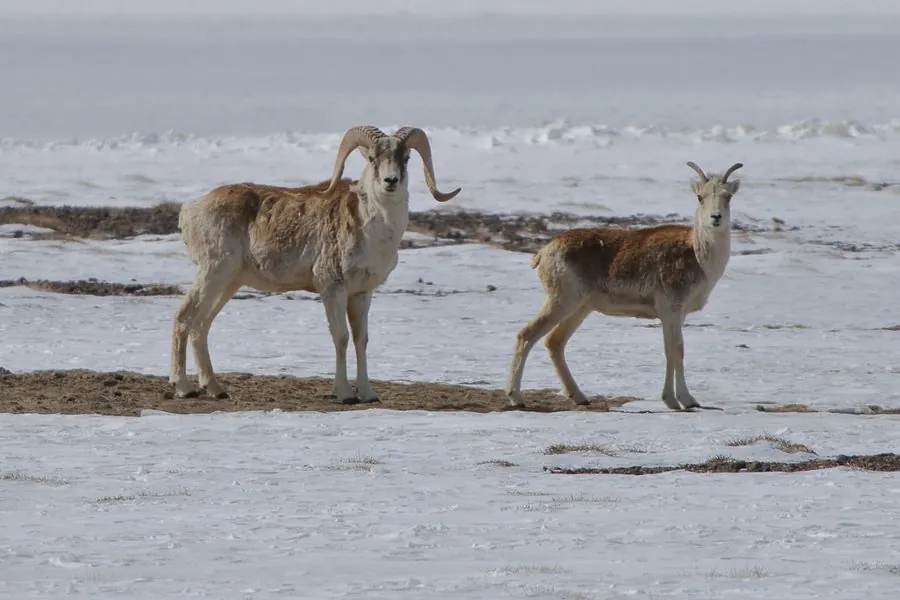

哺乳动物 · 动物界
盘羊 Ovis ammon

亚洲高山中的大型野羊，雄羊长有螺旋盘曲的粗大角，角可重达 20 公斤，善于在陡峭山地攀爬和跳跃。
- 分类
- 门脊索动物门纲哺乳纲目偶蹄目科牛科属盘羊属
- 栖息环境
- 海拔 1000–5000 米的裸岩、高山草甸与草原
- 地理分布
- 中亚高山地区，从帕米尔、天山到蒙古、中国青藏高原和新疆
- 保护级别
- IUCN 近危（NT）；中国国家二级保护动物
物种志
盘羊体长 1.2–2.0 米，肩高 0.9–1.4 米，体重 60–200 kg，雄性明显大于雌性。它的被毛为灰褐至沙褐色，腹部和臀部较浅，冬季毛被更厚；雄羊长有粗大的螺旋状角，角向下盘旋后前端外翻，角长可超过 1.5 米，重量可达 20 kg，雌羊角细小。
盘羊分布于中亚的高山和草原，从帕米尔、天山、阿尔泰山到蒙古、中国青藏高原和新疆，栖息于海拔 1000–5000 米的裸岩、高山草甸和草原。它以禾草、苔草和高山植物为食，结成数只至数十只的群体，雄性在繁殖季用巨大的角互相撞击争夺配偶。盘羊的角生长缓慢，可作为年龄判断依据；雌兽妊娠期约 155–165 天，每胎 1–2 仔。因盗猎和栖息地退化，部分种群数量下降，被列为近危，中国将其列为国家二级保护动物。
形态与习性
- 食性禾草、苔草与高山植物
- 体长1.2–2.0 m，肩高 0.9–1.4 m
- 体重60–200 kg，雄性明显大于雌性
- 寿命野外约 10–13 年
- 繁殖妊娠期约 155–165 天，每胎 1–2 仔
- 角雄羊螺旋角长可超过 1.5 m，重达 20 kg
- 攀爬善于在陡峭山地攀爬和跳跃
趣味知识
- 盘羊雄羊的螺旋角可重达 20 kg，是最重的羊角之一。
- 雄羊在繁殖季用巨大的角互相撞击，声音可传很远。
- 盘羊的角每年生长缓慢，可用于判断年龄。
- 它能站在几乎垂直的岩壁上，蹄底的弹性垫帮助防滑。
生态关系
- 捕食 ← 雪豹 雪豹捕食盘羊